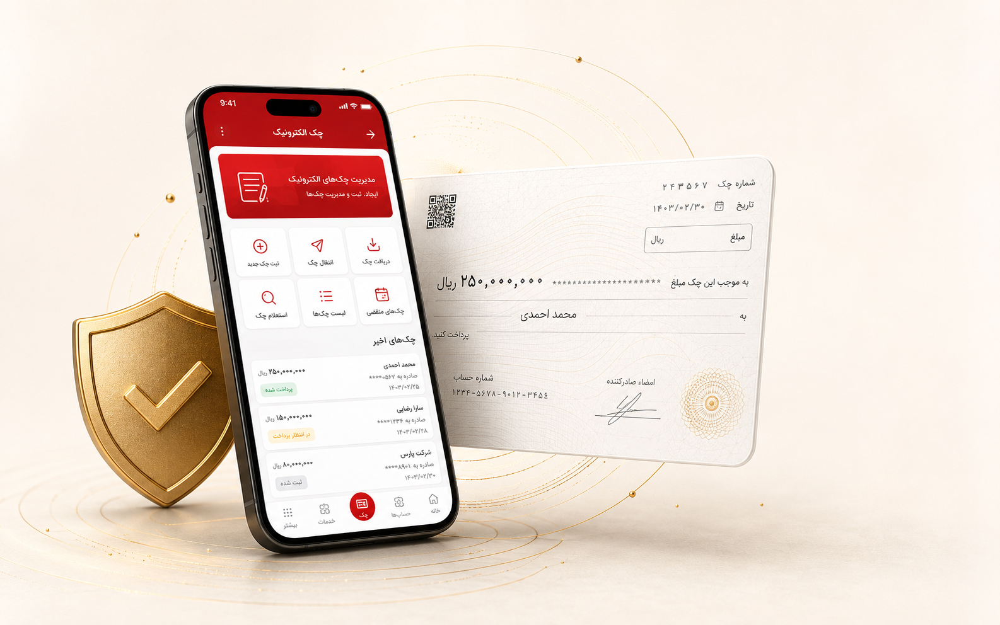

اعتبار قانونی
دارای اعتبار برابر با چک کاغذی
چک الکترونیکی بانک ملت با امضای دیجیتال و اعتبار قانونی، تجربهای سریع، امن و بدون کاغذ را برای شما رقم میزند.

دارای اعتبار برابر با چک کاغذی
امنیت بالا با امضای دیجیتال
صدور و مدیریت چک در هر زمان
مسیر ساده و شفاف چک الکترونیکی بانک ملت
چند پیشنیاز ساده برای استفاده از چک الکترونیکی
داشتن حساب جاری و دستهچک
دسترسی به اینترنتبانک ملت
نصب و فعالسازی اپلیکیشن
فعالسازی رمز و امضای امن
از صدور و امضا تا انتقال و وصول؛ در یک مسیر امن و یکپارچه
ثبت و صدور یک چک جدید
تضمین اصالت و امنیت چک
ارسال سریع و مطمئن به گیرنده
مشاهده و پذیرش چک دریافتشده
وصول وجه و واریز به حساب
مشاهده سابقه و گزارشهای چک
ثبت و صدور یک چک جدید
تضمین اصالت و امنیت چک
ارسال سریع و مطمئن به گیرنده
مشاهده و پذیرش چک دریافتشده
وصول وجه و واریز به حساب
مشاهده سابقه و گزارشهای چک
چک الکترونیکی همان ماهیت و اعتبار قانونی چک کاغذی را دارد؛ اما تمام مراحل صدور، امضا، انتقال و وصول آن بدون برگه کاغذی انجام میشود.
بله. مقررات چک کاغذی درباره چک الکترونیکی نیز اعمال میشود و اصالت آن با امضای دیجیتال تأیید میگردد.
از مسیر بازیابی و فعالسازی رمز در همراهبانک ملت استفاده کنید و سپس فرایند امضای چک را ادامه دهید.
در صورت فراهم بودن شرایط قانونی، مدیریت درخواست از مسیر کارتابل چک الکترونیکی انجام میشود.
امن، سریع و همیشه در دسترس